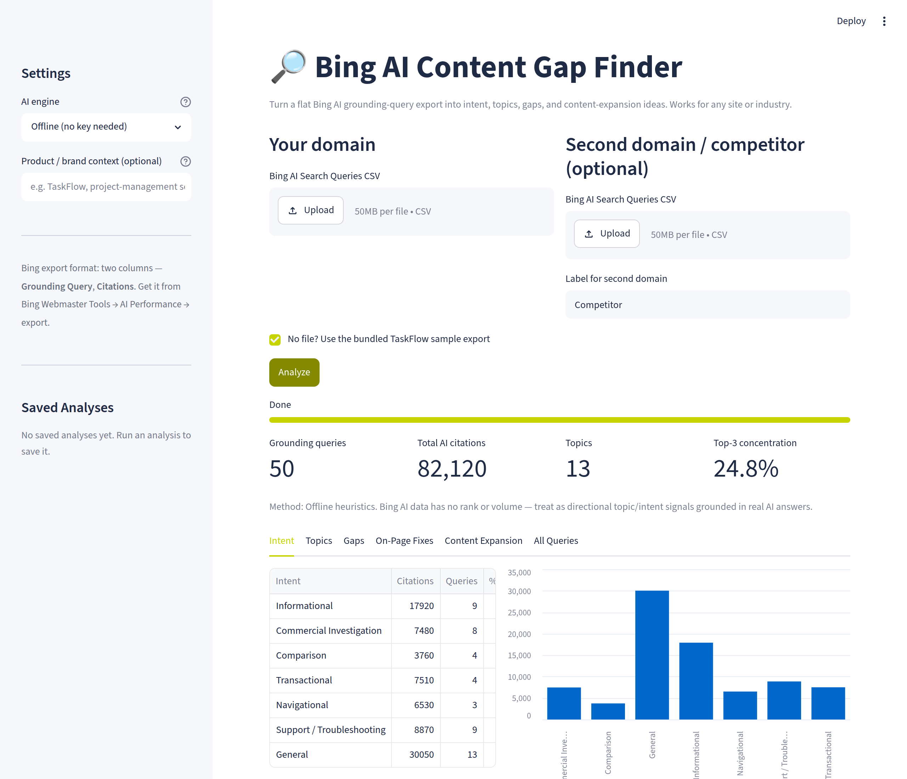

Live Demo · AI Search
Bing AI Content Gap Finder
// runnable demo · Streamlit · try it with the bundled sample
Turns a flat Bing Webmaster Tools “AI Search Queries” export — the grounding queries AI assistants actually cite a site for — into intent classification, topic clusters, content gaps, and ready-to-ship on-page fixes. Upload a CSV (or run the bundled sample) and it returns the work, not just a chart. Runs fully offline; add an OpenAI or Gemini key for sharper labels.
- Classifies every grounding query by searcher intent, then clusters topics
- Flags thin or missing topics, plus optional competitor-cited gaps
- Generates meta title, description, H1, and FAQ copy within real edit limits
PythonStreamlitpandasLLM APIsCloud Run
No login required — tick the bundled sample and click Analyze.
